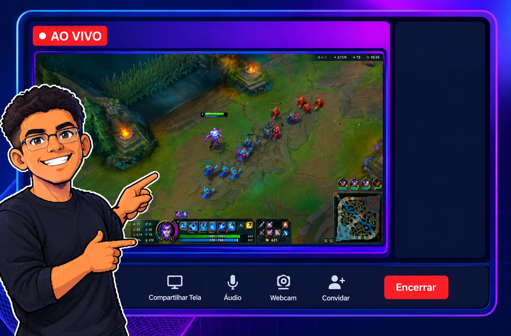

📺 4K 60FPS ⏱️ Zero Delay 🚫 Sem Instalação
A primeira plataforma de screen sharing ultrarrápida, sem lag e direto do navegador.
Começar Grátis
O sistema opera de forma 100% nativa no seu navegador de internet, eliminando completamente a necessidade de baixar, instalar ou configurar qualquer software no seu computador. Você apenas acessa o link e a plataforma já está pronta para uso. A tecnologia que torna isso possível é o WebRTC (Web Real-Time Communication). Trata-se de um protocolo avançado que já vem embutido em todos os navegadores modernos — como Google Chrome, Mozilla Firefox, Safari e Microsoft Edge. O WebRTC foi desenvolvido especificamente para permitir a transmissão de áudio, vídeo e dados complexos em tempo real, criando uma conexão direta e de baixíssima latência sem depender de plugins externos ou aplicativos de terceiros. Como o "motor" necessário para rodar o sistema já reside dentro do navegador que você usa todos os dias, a plataforma consegue entregar a performance de um programa instalado, mas com muito mais agilidade.
1. Clique em Começar Grátis.
2. Gere seu ID.
3. Mande para o seu amigo e comece a transmitir.
Diferente de outras plataformas que bloqueiam recursos e exigem assinaturas mensais, o TOP live adota uma filosofia de transparência e comunidade. Acreditamos que a tecnologia de comunicação de qualidade deve ser livre. Por isso, oferecemos apenas um plano onde tudo está liberado.
O sistema é totalmente gratuito e Open Source (código aberto). Não há versões premium ocultas, limites de uso ou necessidade de cadastrar cartão de crédito. Você utiliza a potência máxima da plataforma desde o primeiro segundo.
Desenvolvido por Allan Krisnei
Criado e mantido com o objetivo de entregar uma solução de alta performance sem burocracia. O projeto foi arquitetado do zero para oferecer uma experiência ágil, segura e focada no usuário, consolidando tecnologia avançada em uma interface simples e acessível para todos.